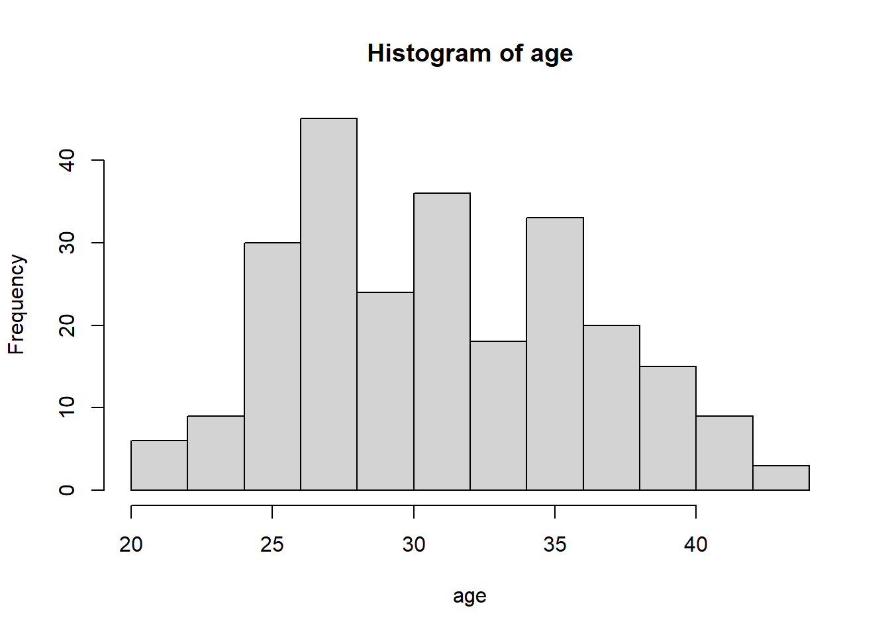
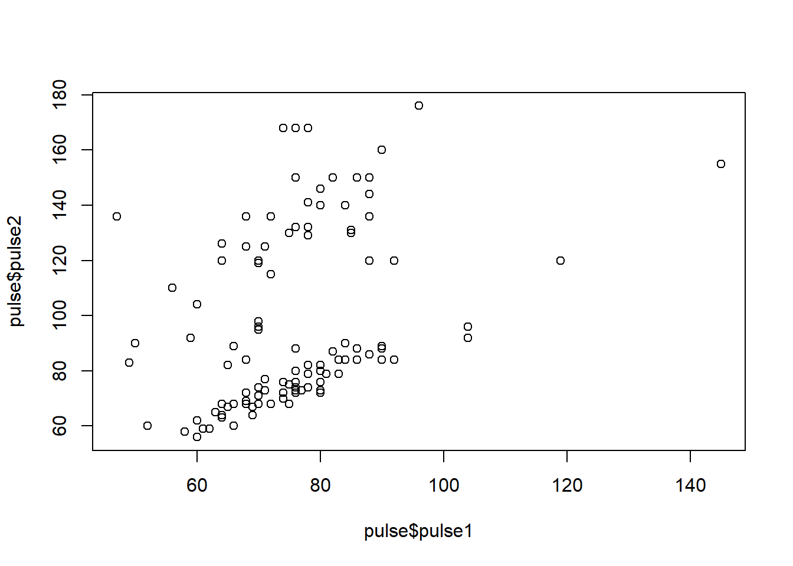
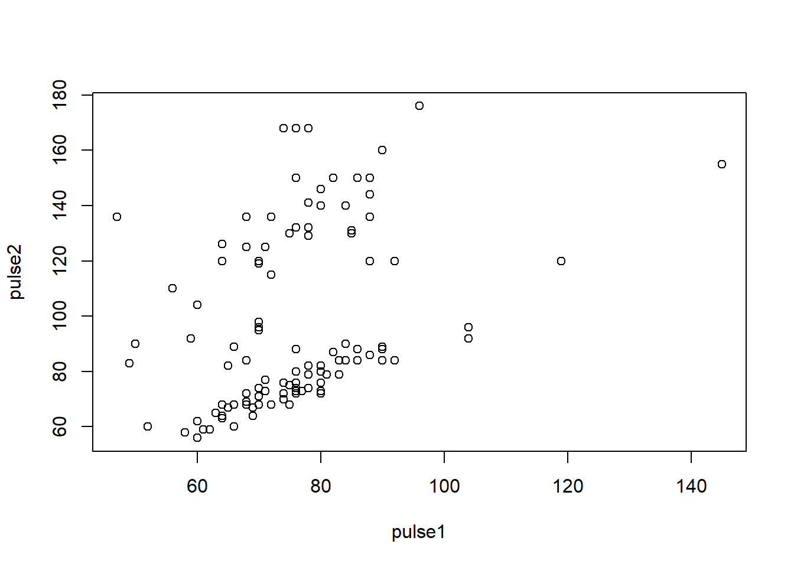
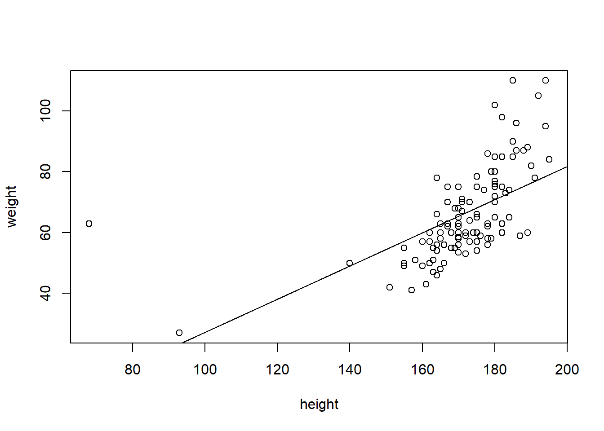
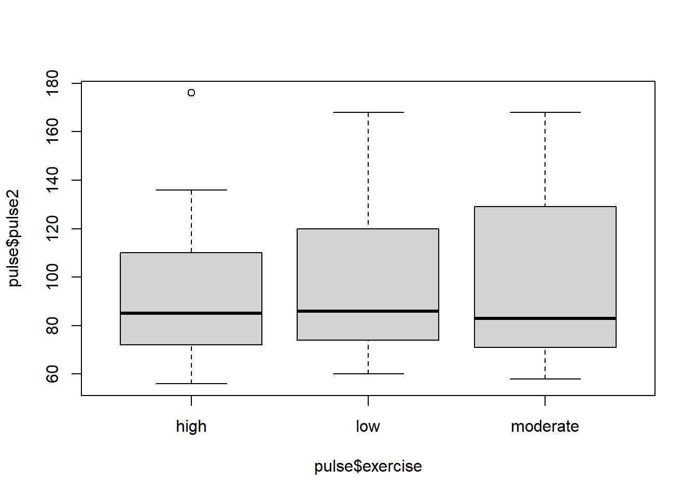
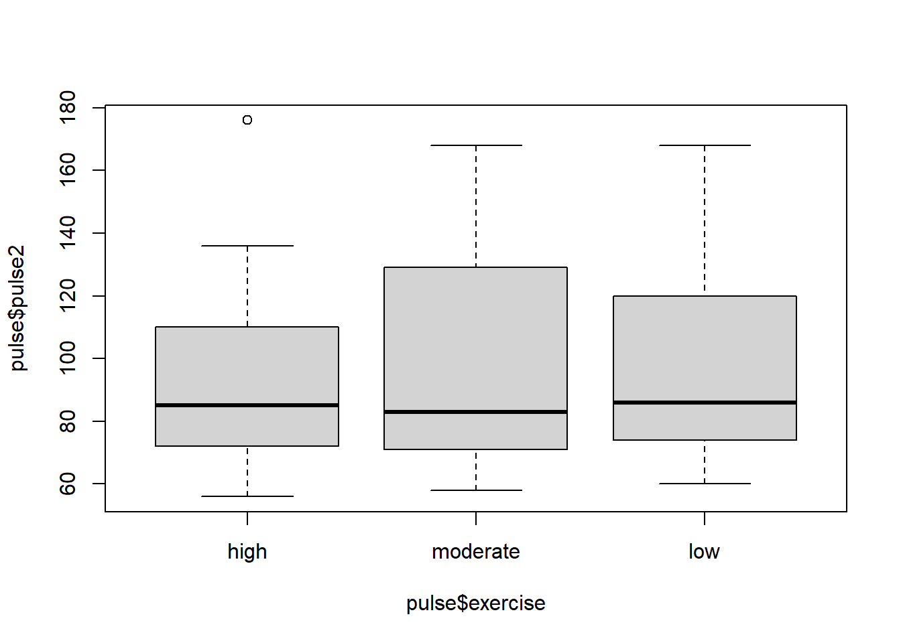
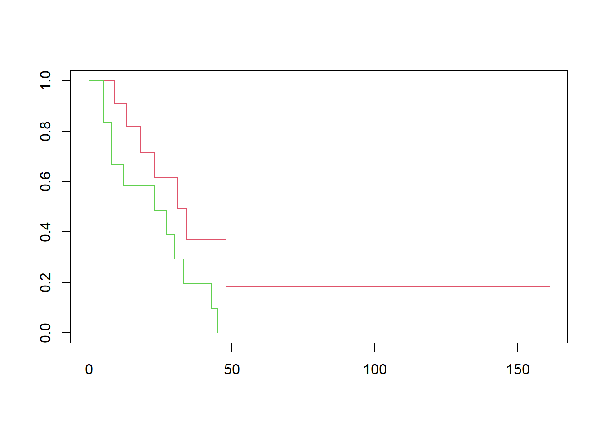

Chapter 3 Data types, part 2
3.1 R scripts and reports (Rmarkdown)
3.1.1 Markdown : R code + Markdown text formating language
With RMarkdown you can combine text, scripts and results. This makes it easy to organize projects.
- RMarkdown (cheat sheet) is a simple language for creating professional reports
An RMarkdown document includes your R code output. Use to:
- share your data analysis with colleagues
- document your data analysis for future generations
The RMarkdown report can be exported in various formats: html, pdf and word
3.1.1.1 Short session
- Opening a new RMarkdown file
- From RStudio File -> New File -> R Markdown
- Choose title and output format, choose
html(default) here and press OK.
- Knitting (compiling R Markdown)
- New RMarkdown file contains example text and code generated for you.
- To knit, press the
knitbutton in Rstudio, or use the shortcutCTRL+Shift+k. It first asks you to save your file. Your file will by default get extension.Rmd
Quick exercises : Review the RMarkdown with the html produced. What did RMarkdown do?
3.1.2 Features of R Markdown
3.1.2.1 Markdown examples
Use
- two spaces at the end of a line for new paragraph (newline)
- hash (
#) for section titles. - dash (
-) for bullet lists. - *italic*, **bold** and ~~strike through~~ for italic, bold,
strike throughrespectively - > to highlight
to highlight
3.1.2.2 Including R code in markdown
R code is included in a chunk:
```{r}
x <- 5
x + 10
```x <- 5
x + 10## [1] 153.1.2.3 Chunk options
There are many chunck options available, most common being echo, eval. For example the option results=‘hide’ prevents the result of the x + 10 being included in this page:
```{r results='hide'}
x <- 5
x + 10
```x <- 5
x + 10And with plots
```{r results='hide'}
with(infert, hist(age))
```
3.1.2.4 R Studio and RMarkdown
- RMarkdown is well integrated with RStudio.
- By pressing
knita new R session is started and terminated after generating the report. - This stand-alone nature helps to make sure that your analysis is reproducible.
- The working directory of the markdown R session is the location of the markdown document.
- The knitting R session is independent from the R session in the RStudio console, this means that:
- All data needed for the generation of the report must be loaded/created by the scripts in the R Markdown document.
- and conversely no data from R session in the R Studio console is accessible by the R session started for knitting.
- It is possible to run a block of R code from R Markdown document inside the R Studio console.
- etc.
3.1.2.5 Try this!
From now on, work only with RMarkdown for this course.
3.2 Lists
3.2.1 What is a list
A list can be thought of as zero or more (named) cells containing data of any type.
Elements may be named.
Elements are accessed through indexing operations.

3.2.2 Creation
study <- list( # here = or <-
name = "Bob", # but here only =
age = 44, # never <-
children = c( "Amy", "Dan", "Eve" )
)
study## $name
## [1] "Bob"
##
## $age
## [1] 44
##
## $children
## [1] "Amy" "Dan" "Eve"The class of study:
class( study )## [1] "list"Function str gives a compact display of an object structure/content:
str( study )## List of 3
## $ name : chr "Bob"
## $ age : num 44
## $ children: chr [1:3] "Amy" "Dan" "Eve"3.2.3 Length
Length of the list (number of elements):
length( study )## [1] 33.2.4 Getting names of the elements
names( study )## [1] "name" "age" "children"3.2.5 Getting a single element
Single elements can be accessed by their names in the list:
study$age## [1] 44study[[ "age" ]]## [1] 44Note the double [[.
The type of the returned element depends on the element:
class( study$age )## [1] "numeric"class( study$children )## [1] "character"Nonexisting elements will give NULL
study$parents## NULLIt is also possible to access elements by numerical index:
study[[ 2 ]]## [1] 44Quick task(s):
Solve the task(s), and check your solution(s) here.
3.2.6 (*) Getting multiple elements as a list
To get (possibly) multiple elements use single brackets notation:
study[ c( "age", "children" ) ]## $age
## [1] 44
##
## $children
## [1] "Amy" "Dan" "Eve"Note the difference:
study[[ "age" ]]## [1] 44study[ "age" ]## $age
## [1] 44class( study[[ "age" ]] )## [1] "numeric"class( study[ "age" ] )## [1] "list"Accessing nonexisting elements with single brackets:
study[ "parents" ]## $<NA>
## NULLclass( study[ "parents" ] )## [1] "list"names( study[ "parents" ] )## [1] NAis.null( study[ "parents" ] )## [1] FALSENumerical or logical indices may be also used:
study[ c( 3, 1, 1 ) ]## $children
## [1] "Amy" "Dan" "Eve"
##
## $name
## [1] "Bob"
##
## $name
## [1] "Bob"study[ c( T, F, T ) ]## $name
## [1] "Bob"
##
## $children
## [1] "Amy" "Dan" "Eve"3.2.7 (*) Removing an element
A list element is removed by setting to NULL:
str( study )## List of 3
## $ name : chr "Bob"
## $ age : num 44
## $ children: chr [1:3] "Amy" "Dan" "Eve"study[[ "children" ]] <- NULL; # NULL means "nothing"
str( study )## List of 2
## $ name: chr "Bob"
## $ age : num 443.2.8 (*) Adding an element
str( study )## List of 2
## $ name: chr "Bob"
## $ age : num 44study$gender <- "male"
str( study )## List of 3
## $ name : chr "Bob"
## $ age : num 44
## $ gender: chr "male"Quick task(s):
Solve the task(s), and check your solution(s) here.
3.3 Basic statistical tests
## pulse <- read.delim("pulse.txt")
## survey <- read.delim("survey.txt")3.3.1 Statistical methods with R
Statistical methods typically have their own pre-defined functions. Example: the t-test.
3.3.1.1 Statistical tests - the t test
Suppose we are interested in finding a difference between pulse1 and pulse2 in the pulse data. These are two variables representing measurements per individual before (pulse1) and after (pulse2) an intervention. As such, measurements are paired so we apply a paired t test:
t.test(pulse$pulse1, pulse$pulse2, paired=TRUE)##
## Paired t-test
##
## data: pulse$pulse1 and pulse$pulse2
## t = -7.4726, df = 108, p-value = 2.172e-11
## alternative hypothesis: true difference in means is not equal to 0
## 95 percent confidence interval:
## -26.70969 -15.51049
## sample estimates:
## mean of the differences
## -21.110093.3.1.2 Accessing the result
The output on the screen is clear. But sometimes we want to extract parts of the output, say to put in a report, without having to include the entire output of the test. To do that, let us first save the result as an R object, and then check what it contains by using names().
res <- t.test(pulse$pulse1, pulse$pulse2, paired=TRUE)
names(res)## [1] "statistic" "parameter" "p.value" "conf.int" "estimate"
## [6] "null.value" "stderr" "alternative" "method" "data.name"class(res)## [1] "htest"Note that the resulting object of t.test is a special type of object. It contains various components, including statistic and parameter. Each can be assessed by using a $ sign, as in:
res$statistic## t
## -7.472648res$p.value## [1] 2.171529e-11Note in particular that elements in this result involve different types and lengths. Indeed:
class(res$p.value)## [1] "numeric"class(res$alternative)## [1] "character"length(res$p.value)## [1] 1length(res$conf.int)## [1] 2This means that the object resulting from the t.test function is a list too.
3.3.1.3 Wilcoxon test
Similarly to what we did above, we can apply a Wilcoxon test for these paired measurements and save results as an object. This can be done using:
res <- wilcox.test(pulse$pulse1, pulse$pulse2, paired=TRUE)Note that the syntax is the same as the one used for the t test.
We can also assess names and the class of the object created by the Wilcoxon test:
names(res)## [1] "statistic" "parameter" "p.value" "null.value" "alternative"
## [6] "method" "data.name"class(res)## [1] "htest"Note that the class of the object created by the wilcox.test function is the same as that for the object created by the t.test function.
3.3.1.4 Other statistical tests
Other basic tests available include:
chisq.testfisher.testbinom.test
Quick task(s):
Solve the task(s), and check your solution(s) here.
3.4 Regression and formula objects
3.4.1 Formula objects
Formula objects are the way to tell R that one variable depends on another.
3.4.1.1 Basics of formula objects
To specify a (statistical) model in which y depends on x, say
y ~ x## y ~ xWe use a formula for more readable specification of code. For example, when plotting. Instead of
plot(pulse$pulse1, pulse$pulse2)
we say
plot(pulse2 ~ pulse1, data=pulse)
Note the reverse order!
If a function allows a formula as input it always has a data argument. This gives the data.frame (or other environment) in which the variables in the formula are interpreted.
3.4.1.2 Use of formula objects in statistics
Formula objects can also be used in the syntax of tests and other functions, making them simpler. For example, consider the problem of comparing values of pulse1 between males and females. We can use an unpaired t test for this, by writing:
pulse1.male <- pulse$pulse1[survey$gender == 'male']
pulse1.female <- pulse$pulse1[survey$gender == 'female']
t.test(pulse1.male, pulse1.female)##
## Welch Two Sample t-test
##
## data: pulse1.male and pulse1.female
## t = 0.25755, df = 99.399, p-value = 0.7973
## alternative hypothesis: true difference in means is not equal to 0
## 95 percent confidence interval:
## -4.469216 5.802550
## sample estimates:
## mean of x mean of y
## 76.00000 75.33333A much simpler way is to use a formula:
t.test(pulse1 ~ gender, data = pulse)##
## Welch Two Sample t-test
##
## data: pulse1 by gender
## t = 1.3234, df = 106.3, p-value = 0.1885
## alternative hypothesis: true difference in means between group female and group male is not equal to 0
## 95 percent confidence interval:
## -1.667268 8.362184
## sample estimates:
## mean in group female mean in group male
## 77.50000 74.15254Many functions allow (or require!) formula as input.
3.4.1.3 (*) The formula class
A formula is just a R object.
class(y~x)## [1] "formula"It can be stored in a variable and reused.
form <- pulse1 ~ gender
t.test(form, data=pulse)##
## Welch Two Sample t-test
##
## data: pulse1 by gender
## t = 1.3234, df = 106.3, p-value = 0.1885
## alternative hypothesis: true difference in means between group female and group male is not equal to 0
## 95 percent confidence interval:
## -1.667268 8.362184
## sample estimates:
## mean in group female mean in group male
## 77.50000 74.15254Quick task(s):
Solve the task(s), and check your solution(s) here.
3.4.2 Simple linear regression
3.4.2.1 The lm function
The command for linear regression is lm (for linear model). The linear model returns an object of class lm.
fit <- lm(weight ~ height, data = pulse)The output of lm is an object of class lm.
fit##
## Call:
## lm(formula = weight ~ height, data = pulse)
##
## Coefficients:
## (Intercept) height
## -27.4398 0.5465names(fit)## [1] "coefficients" "residuals" "effects" "rank"
## [5] "fitted.values" "assign" "qr" "df.residual"
## [9] "xlevels" "call" "terms" "model"Some S3 objects have special functions defined for them. The following functions extract useful information from the lm object.
summary(fit)##
## Call:
## lm(formula = weight ~ height, data = pulse)
##
## Residuals:
## Min 1Q Median 3Q Max
## -17.549 -8.197 -2.601 5.469 53.277
##
## Coefficients:
## Estimate Std. Error t value Pr(>|t|)
## (Intercept) -27.43977 12.73858 -2.154 0.0335 *
## height 0.54651 0.07392 7.393 3.23e-11 ***
## ---
## Signif. codes: 0 '***' 0.001 '**' 0.01 '*' 0.05 '.' 0.1 ' ' 1
##
## Residual standard error: 12.41 on 108 degrees of freedom
## Multiple R-squared: 0.336, Adjusted R-squared: 0.3299
## F-statistic: 54.66 on 1 and 108 DF, p-value: 3.231e-11coef(fit)## (Intercept) height
## -27.4397668 0.5465124residuals(fit)## 1993_A 1993_B 1993_C 1993_D 1993_E 1993_F
## -10.1068721 -12.3859463 -1.8277979 4.8698559 -3.1068721 0.8814919
## 1993_G 1993_H 1993_I 1993_J 1993_K 1993_L
## -4.0952361 -9.9208226 -6.1882608 -4.3743103 9.5326650 -11.8394339
## 1993_M 1993_N 1993_O 1993_P 1993_Q 1993_R
## 2.5326650 -15.7580452 1.0675414 36.3349796 -9.4673350 -0.9324586
## 1993_S 1993_T 1993_U 1993_V 1993_W 1993_X
## -7.2812855 -7.2696495 -8.1998968 0.9280359 -6.6417484 2.9745167
## 1993_Y 1993_Z 1995_A 1995_B 1995_C 1995_D
## -9.7464092 4.7070785 -5.4673350 -6.5603597 -15.8510699 -13.8394339
## 1995_E 1995_F 1995_G 1995_H 1995_I 1995_J
## 6.8001032 14.0675414 -3.0022114 3.8117392 -3.1998968 -6.6417484
## 1995_K 1995_L 1995_M 1995_N 1995_O 1995_P
## 16.3349796 3.0791774 0.2652268 -8.2696495 -2.1998968 -6.8394339
## 1995_Q 1995_R 1995_S 1995_T 1995_U 1995_V
## -8.1185081 -5.4673350 -1.0952361 -16.1882608 3.9861526 12.9745167
## 1996_A 1996_B 1996_C 1996_D 1996_E 1996_F
## -7.6533844 6.1722021 -17.3626743 0.4280043 11.1722021 0.9861526
## 1996_G 1996_H 1996_I 1996_J 1996_K 1996_L
## -9.0254833 2.8931279 12.9745167 -7.9091866 -11.0022114 4.0675414
## 1996_M 1996_N 1996_O 1996_P 1996_Q 1996_R
## 6.0675414 11.6954425 -8.1882608 31.0675414 -7.8394339 -13.2812855
## 1996_S 1996_T 1996_U 1997_A 1997_B 1997_C
## -11.1998968 9.0675414 25.9745167 -13.0836001 12.7884672 5.6024177
## 1997_D 1997_E 1997_F 1997_G 1997_H 1997_I
## 9.6140537 -14.7347732 -13.5603597 -3.1068721 -11.9673350 -6.9673350
## 1997_J 1997_K 1997_L 1997_M 1997_N 1997_O
## -10.6417484 1.0559054 -7.5603597 4.9861526 5.0675414 31.4163683
## 1997_P 1997_Q 1997_R 1997_S 1997_T 1997_U
## -0.8277979 27.5093930 16.4163683 12.1489301 -11.0952361 -14.1998968
## 1997_V 1997_W 1998_A 1998_B 1998_C 1998_D
## 10.3001032 21.7884672 16.1605661 -7.4673350 -4.7347732 15.8117392
## 1998_E 1998_F 1998_G 1998_H 1998_I 1998_J
## -5.9324586 -3.4673350 -2.2696495 -2.7347732 -9.3743103 53.2769261
## 1998_K 1998_L 1998_M 1998_N 1998_O 1998_P
## -2.4673350 9.6140537 -14.6417484 3.6141170 -17.5487237 -12.0254833
## 1998_Q 1998_R
## -0.4673350 11.3349796fitted.values(fit)## 1993_A 1993_B 1993_C 1993_D 1993_E 1993_F 1993_G 1993_H
## 67.106872 70.385946 63.827798 79.130144 67.106872 73.118508 61.095236 64.920823
## 1993_I 1993_J 1993_K 1993_L 1993_M 1993_N 1993_O 1993_P
## 62.188261 64.374310 65.467335 69.839434 65.467335 74.758045 70.932459 73.665020
## 1993_Q 1993_R 1993_S 1993_T 1993_U 1993_V 1993_W 1993_X
## 65.467335 70.932459 63.281286 57.269650 68.199897 49.071964 61.641748 72.025483
## 1993_Y 1993_Z 1995_A 1995_B 1995_C 1995_D 1995_E 1995_F
## 68.746409 69.292922 65.467335 66.560360 75.851070 69.839434 68.199897 70.932459
## 1995_G 1995_H 1995_I 1995_J 1995_K 1995_L 1995_M 1995_N
## 60.002211 62.188261 68.199897 61.641748 73.665020 64.920823 62.734773 57.269650
## 1995_O 1995_P 1995_Q 1995_R 1995_S 1995_T 1995_U 1995_V
## 68.199897 69.839434 73.118508 65.467335 61.095236 62.188261 66.013847 72.025483
## 1996_A 1996_B 1996_C 1996_D 1996_E 1996_F 1996_G 1996_H
## 67.653384 63.827798 58.362674 72.571996 63.827798 66.013847 72.025483 67.106872
## 1996_I 1996_J 1996_K 1996_L 1996_M 1996_N 1996_O 1996_P
## 72.025483 58.909187 60.002211 70.932459 70.932459 75.304558 62.188261 70.932459
## 1996_Q 1996_R 1996_S 1996_T 1996_U 1997_A 1997_B 1997_C
## 69.839434 63.281286 68.199897 70.932459 72.025483 55.083600 74.211533 76.397582
## 1997_D 1997_E 1997_F 1997_G 1997_H 1997_I 1997_J 1997_K
## 70.385946 62.734773 66.560360 67.106872 65.467335 65.467335 61.641748 76.944095
## 1997_L 1997_M 1997_N 1997_O 1997_P 1997_Q 1997_R 1997_S
## 66.560360 66.013847 70.932459 78.583632 63.827798 77.490607 78.583632 75.851070
## 1997_T 1997_U 1997_V 1997_W 1998_A 1998_B 1998_C 1998_D
## 61.095236 68.199897 68.199897 74.211533 69.839434 65.467335 62.734773 62.188261
## 1998_E 1998_F 1998_G 1998_H 1998_I 1998_J 1998_K 1998_L
## 70.932459 65.467335 57.269650 62.734773 64.374310 9.723074 65.467335 70.385946
## 1998_M 1998_N 1998_O 1998_P 1998_Q 1998_R
## 61.641748 23.385883 60.548724 72.025483 65.467335 73.665020Note that summary(fit) returns itself an object in which some additional things are calculated.
summa <- summary(fit)
class(summa)## [1] "summary.lm"names(summa)## [1] "call" "terms" "residuals" "coefficients"
## [5] "aliased" "sigma" "df" "r.squared"
## [9] "adj.r.squared" "fstatistic" "cov.unscaled"Most useful is the regression table
coef(summa)## Estimate Std. Error t value Pr(>|t|)
## (Intercept) -27.4397668 12.73857886 -2.154068 3.345796e-02
## height 0.5465124 0.07392117 7.393178 3.231467e-11and the confidence intervals for all or some regression coefficients
confint(fit)## 2.5 % 97.5 %
## (Intercept) -52.6898400 -2.1896935
## height 0.3999878 0.6930369confint(fit, "height")## 2.5 % 97.5 %
## height 0.3999878 0.69303693.4.2.2 Visualizing a regression
We can easily visualize the regression using the same formula and fit object
plot(weight ~ height, data=pulse)
abline(coef(fit))
Quick task(s):
Solve the task(s), and check your solution(s) here.
3.4.3 Multiple regression and prediction
3.4.3.1 Multiple terms in a formula
We can have multiple terms in a formula. This way we can do multiple regression
fit <- lm(pulse2 ~ pulse1 + height, data=pulse)
fit##
## Call:
## lm(formula = pulse2 ~ pulse1 + height, data = pulse)
##
## Coefficients:
## (Intercept) pulse1 height
## 25.96489 0.86822 0.02984summary(fit)##
## Call:
## lm(formula = pulse2 ~ pulse1 + height, data = pulse)
##
## Residuals:
## Min 1Q Median 3Q Max
## -28.89 -23.05 -17.84 28.40 72.89
##
## Coefficients:
## Estimate Std. Error t value Pr(>|t|)
## (Intercept) 25.96489 39.90679 0.651 0.516688
## pulse1 0.86822 0.22380 3.879 0.000182 ***
## height 0.02984 0.18427 0.162 0.871668
## ---
## Signif. codes: 0 '***' 0.001 '**' 0.01 '*' 0.05 '.' 0.1 ' ' 1
##
## Residual standard error: 29.71 on 106 degrees of freedom
## (1 observation deleted due to missingness)
## Multiple R-squared: 0.1309, Adjusted R-squared: 0.1145
## F-statistic: 7.981 on 2 and 106 DF, p-value: 0.00059043.4.3.2 Predicting
We can use regression for prediction using the predict function. To predict we need two things. First, a fitted model object.
fit <- lm(pulse2 ~ pulse1 + height, data=pulse)Second, a data.frame with new data for our covariates
new.data <- data.frame(pulse1=c(90, 80), height=c(c(173, 185)))Now we can predict a value for a person with these covariates
predict(fit, new.data)## 1 2
## 109.2668 100.94263.4.3.3 (*) Interaction
Specifying interactions between variables in a formula: use : or *:
:interaction only*interaction and main effects
Let us say that we want to explain pulse2 by pulse1, exercise and alcohol, as well as a variable representing an interaction between exercise and alcohol. Two alternative ways of specifying the same model are
lm(pulse2 ~ pulse1 + exercise + alcohol + exercise:alcohol, data=pulse)##
## Call:
## lm(formula = pulse2 ~ pulse1 + exercise + alcohol + exercise:alcohol,
## data = pulse)
##
## Coefficients:
## (Intercept) pulse1
## 6.0581 0.8911
## exerciselow exercisemoderate
## 17.6346 24.1769
## alcoholyes exerciselow:alcoholyes
## 28.4487 -21.3348
## exercisemoderate:alcoholyes
## -28.8261lm(pulse2 ~ pulse1 + exercise*alcohol, data=pulse)##
## Call:
## lm(formula = pulse2 ~ pulse1 + exercise * alcohol, data = pulse)
##
## Coefficients:
## (Intercept) pulse1
## 6.0581 0.8911
## exerciselow exercisemoderate
## 17.6346 24.1769
## alcoholyes exerciselow:alcoholyes
## 28.4487 -21.3348
## exercisemoderate:alcoholyes
## -28.82613.4.3.4 (*) The intercept term
We see that R automatically adds an intercept term to the model. You can suppress the intercept too, by adding either +0 or -1 to the formula. Suppressing the intercept has different effects if there are factor variables in your model or not.
Suppression of the intercept means regression through the origin
lm(weight ~ 0 + height, data=pulse)##
## Call:
## lm(formula = weight ~ 0 + height, data = pulse)
##
## Coefficients:
## height
## 0.388Note that this is different if we have factors (see next part)!
Quick task(s):
Solve the task(s), and check your solution(s) here.
3.5 Factors (advanced)
3.5.1 Factors revisited
We have seen an introduction to factors in the section ‘Basic data types’. Remember that they are variables that define categories. We can find out the category names involved using levels and tabulate factors:
levels(pulse$exercise)## NULLtable(pulse$exercise)##
## high low moderate
## 14 37 59Note that the category names given by its levels come typically in alphabetical order. In the example above, this order does not correspond to the intrinsic order of the categories, in which the extremes are given by high and low, with intermediate in the middle, rather than the last one. This is not a big problem for a table, but it is not ideal for a graph. Indeed, a boxplot of pulse2 according to the groups defined by exercise looks like:
boxplot(pulse$pulse2 ~ pulse$exercise)
So we would like to re-order the factor levels so that they correspond to the intrinsic order of the categories.
3.5.1.1 Reordering a factor
To change the order of the category levels, we create the factor again by giving its levels in the correct order:
pulse$exercise <- factor(pulse$exercise, levels=c('high', 'moderate', 'low'))We can check that the re-ordering has worked:
levels(pulse$exercise)## [1] "high" "moderate" "low"table(pulse$exercise)##
## high moderate low
## 14 59 37boxplot(pulse$pulse2 ~ pulse$exercise)
3.5.1.2 Changing factor labels
If you want to change the category labels only, without re-ordering them, assign new values to the levels of a factor.
pulse$exercise2 <- pulse$exercise
levels(pulse$exercise2) <- c("H", "I", "L")
table(pulse$exercise2)##
## H I L
## 14 59 37We can use similar code to merge categories of a factor. For example, to merge the categories H and I, assign to them the same label:
pulse$exercise3 <- pulse$exercise
levels(pulse$exercise3) <- c("H.I", "H.I" , "L")3.5.1.3 Turning a continuous variable into categories
Use cut to categorise a continuous variable and turn into a factor variable. Note that when calling cut the break points between categories need to be given, including the maximum and minimum values of the original variable.
pulse$height4 <- cut(pulse$height, c(min(pulse$height)-1, 160, 170, 180, max(pulse$height)))
class(pulse$height4)## [1] "factor"table(pulse$height4)##
## (67,160] (160,170] (170,180] (180,195]
## 11 38 37 24You may want to change the labels to something prettier.
levels(pulse$height4) <- c('-160', '160-170', '170-180', '180+')
table(pulse$height4)##
## -160 160-170 170-180 180+
## 11 38 37 243.5.1.4 (*) Combining factors
The : operator can be used to make a new factor with all combinations of two (or more) factors
#pulse$smokes:pulse$alcoholQuick task(s):
Solve the task(s), and check your solution(s) here.
3.5.2 ANOVA and regression with factors
An ANOVA analysis can be run in R by using the results of a regression model fit, such as from lm.
3.5.2.1 Regression model fit
Say you fit a regression model of pulse2 on exercise, which already had its categories reordered:
table(pulse$exercise)##
## high moderate low
## 14 59 37fit <- lm(pulse2 ~ exercise, data=pulse)
summary(fit)##
## Call:
## lm(formula = pulse2 ~ exercise, data = pulse)
##
## Residuals:
## Min 1Q Median 3Q Max
## -39.45 -24.45 -12.97 27.55 82.36
##
## Coefficients:
## Estimate Std. Error t value Pr(>|t|)
## (Intercept) 93.643 8.510 11.004 <2e-16 ***
## exercisemoderate 3.805 9.481 0.401 0.689
## exerciselow 3.330 9.991 0.333 0.740
## ---
## Signif. codes: 0 '***' 0.001 '**' 0.01 '*' 0.05 '.' 0.1 ' ' 1
##
## Residual standard error: 31.84 on 106 degrees of freedom
## (1 observation deleted due to missingness)
## Multiple R-squared: 0.001533, Adjusted R-squared: -0.01731
## F-statistic: 0.08139 on 2 and 106 DF, p-value: 0.9219In the results, exercisemoderate represents the effect of exercise='moderate' versus the reference category exercise='high'. By default, the first level of the factor is taken as the reference category, and this is often the first level in alphabetical order.
The model fit above yields tests per category of exercise, compared with the reference category. However, a test for the effect of the entire variable exercise is not directly available. This can be obtained with ANOVA (Analysis of Variance).
3.5.2.2 The ANOVA table and F-test
The ANOVA table can be obtained by using the function anova and the model fit fit:
anova(fit)## Analysis of Variance Table
##
## Response: pulse2
## Df Sum Sq Mean Sq F value Pr(>F)
## exercise 2 165 82.51 0.0814 0.9219
## Residuals 106 107461 1013.78We can also compare two model fits using ANOVA. Say that we want to check if the above model fit improves by including gender in the model. Then we fit a model with both exercise and gender, and compare this new fit with the above one:
fit2 <- lm(pulse2 ~ exercise + gender, data=pulse)
anova(fit, fit2)## Analysis of Variance Table
##
## Model 1: pulse2 ~ exercise
## Model 2: pulse2 ~ exercise + gender
## Res.Df RSS Df Sum of Sq F Pr(>F)
## 1 106 107461
## 2 105 107117 1 343.83 0.337 0.5628Note that lm by default removes any subjects which have missing values in at least one of the covariates. This means that the number of subjects in fit and fit0 may be different and error returned. In that case remove subjects with missing values manually (or do imputation or something more fancy).
3.5.2.3 (*) Model fit without a reference category
When fitting a regression model, we can do without a reference category in a model fit by suppressing the intercept:
lm(pulse2 ~ 0 + gender, data=pulse)##
## Call:
## lm(formula = pulse2 ~ 0 + gender, data = pulse)
##
## Coefficients:
## genderfemale gendermale
## 98.92 95.00The coefficient now represents the mean in the group (male or female), instead of a comparison between males and females (such a comparison is called a contrast).
Note that the reference category is only suppressed for the first factor in the formula:
lm(pulse2 ~ 0 + gender + ran, data=pulse)##
## Call:
## lm(formula = pulse2 ~ 0 + gender + ran, data = pulse)
##
## Coefficients:
## genderfemale gendermale ransat
## 127.99 125.80 -51.92Note that suppressing the intercept has a different effect for explanatory factors and for continuous explanatory variables.
3.5.3 (*) Generalized linear models and survival
Regression models can be run using the function glm (generalized linear model), which has very similar syntax to lm. Amongst useful models are logistic models.
3.5.3.1 (*) Logistic regression and ANOVA
For logistic regression, use glm with slot family=binomial.
## fit <- glm(alcohol ~ gender + smokes + exercise, family=binomial, data=pulse)
summary(fit)##
## Call:
## lm(formula = pulse2 ~ exercise, data = pulse)
##
## Residuals:
## Min 1Q Median 3Q Max
## -39.45 -24.45 -12.97 27.55 82.36
##
## Coefficients:
## Estimate Std. Error t value Pr(>|t|)
## (Intercept) 93.643 8.510 11.004 <2e-16 ***
## exercisemoderate 3.805 9.481 0.401 0.689
## exerciselow 3.330 9.991 0.333 0.740
## ---
## Signif. codes: 0 '***' 0.001 '**' 0.01 '*' 0.05 '.' 0.1 ' ' 1
##
## Residual standard error: 31.84 on 106 degrees of freedom
## (1 observation deleted due to missingness)
## Multiple R-squared: 0.001533, Adjusted R-squared: -0.01731
## F-statistic: 0.08139 on 2 and 106 DF, p-value: 0.9219When using anova in glm, the default is not to give a p-value. If you want it, explicitly ask for one. In case of the logistic model, the adequate way to compute the ANOVA p-value is via the likelihood ratio test (LRT):
anova(fit, test='LRT')## Analysis of Variance Table
##
## Response: pulse2
## Df Sum Sq Mean Sq F value Pr(>F)
## exercise 2 165 82.51 0.0814 0.9219
## Residuals 106 107461 1013.783.5.3.2 (*) Survival analysis
Survival analysis methods are available in the survival package, which is installed automatically with the base package. The syntax is similar to lm and glm, except that the response has to be a Surv object, built from two separate variables giving time and event.
We do not have survival times in the pulse data, so we use the aml data from the survival package.
library(survival)
## ?aml
with(aml, Surv(time, status))## [1] 9 13 13+ 18 23 28+ 31 34 45+ 48 161+ 5 5 8 8
## [16] 12 16+ 23 27 30 33 43 45To draw Kaplan-Meier curves, use survfit:
fit <- survfit(Surv(time, status) ~ x, data=aml)
plot(fit, col=2:3)
A log-rank test can be computed using:
survdiff(Surv(time, status) ~ x, data=aml)## Call:
## survdiff(formula = Surv(time, status) ~ x, data = aml)
##
## N Observed Expected (O-E)^2/E (O-E)^2/V
## x=Maintained 11 7 10.69 1.27 3.4
## x=Nonmaintained 12 11 7.31 1.86 3.4
##
## Chisq= 3.4 on 1 degrees of freedom, p= 0.07A Cox model can be fitted as follows:
coxph(Surv(time, status) ~ x, data=aml)## Call:
## coxph(formula = Surv(time, status) ~ x, data = aml)
##
## coef exp(coef) se(coef) z p
## xNonmaintained 0.9155 2.4981 0.5119 1.788 0.0737
##
## Likelihood ratio test=3.38 on 1 df, p=0.06581
## n= 23, number of events= 18As before, each object can be stored separately. In particular, the Surv object can be saved and the entire analysis run using it.
The result of coxph can be stored as an object and manipulated in most ways like a lm or glm object. In particular we can use anova to compare different model fits.
Quick task(s):
Solve the task(s), and check your solution(s) here.